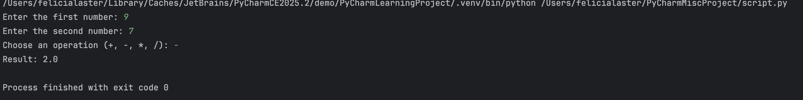

🪄 The Sorceress of Syntax
Where coding meets sorcery — one spell (project) at a time.
Welcome, traveler, to my mystical coding journey. I'm Felicia Laster, an educator and Python enthusiast documenting my path through the magical realms of code. Here, you'll find my spells (projects), enchantments (lessons learned), and the chronicles of my daily adventures in Python.
📖 About the Sorceress
Every great wizard has an origin story. Here's mine.

Hi! I'm Felicia Laster — an educator, Python enthusiast, and lifelong learner. This space is where I blend creativity, logic, and a touch of magic to document my daily coding journey.
I'm currently mastering Python through the **Replit 100 Days of Code** course, and I'm sharing every step of the way through weekly reflections, project demos, and live coding sessions.
🗺️ My Learning Journey
Follow my **Dr. Angela Yu's #100 Days of Code** adventure. Each week represents a **7-day block** focused on a core skill, culminating in a featured project!
Dr. Angela Yu's #100 Days of Code: The Complete Python Bootcamp (14 Week Journey)
Week 1: Hello Python!
Kicked off the challenge! Learned print statements, variables, and basic user input. Set up my Replit workspace and committed to the journey.

📝 Week 1 Reflections
[Your weekly reflection here]
[Second paragraph]
Key Concepts:
Featured Project: 100 Days Commitment
My declaration of commitment to the 100 Days challenge with personalized output.
📹 Watch Live Coding DemoWeek 2: Math & Conditional Logic
Learned arithmetic operations, comparison operators, and if/elif/else statements. Built my first interactive decision-making programs!

📝 Week 2 Reflections
[Your weekly reflection here]
[Second paragraph]
Key Concepts:
Featured Project: Simple Calculator
An interactive calculator that performs basic arithmetic based on user input.
📹 Watch Live Coding DemoWeek 3: Logic & Flow Control
Dove deeper into logical operators (and, or, not) and nested conditionals. Created programs with complex decision trees.

📝 Week 3 Reflections
[Your weekly reflection here]
[Second paragraph]
Key Concepts:
Featured Project: Adventure Game
A text-based adventure with multiple paths and outcomes using nested if statements.
📹 Watch Live Coding DemoWeek 4: Loops & Repetition
Mastered while loops and for loops. Learned how to repeat code efficiently and avoid infinite loops!

📝 Week 4 Reflections
[Your weekly reflection here]
[Second paragraph]
Key Concepts:
Featured Project: Number Guessing Game
An interactive guessing game that uses loops to let players keep trying until they win.
📹 Watch Live Coding DemoWeek 5: Lists & Collections
Introduction to lists! Learned how to store multiple values, access items by index, and manipulate list data.

📝 Week 5 Reflections
[Your weekly reflection here]
[Second paragraph]
Key Concepts:
Featured Project: To-Do List
A simple to-do list manager that lets users add, view, and remove tasks.
📹 Watch Live Coding DemoWeek 6: Functions & Modularity
Created reusable code with functions! Learned about parameters, return values, and organizing code into logical blocks.

📝 Week 6 Reflections
[Your weekly reflection here]
[Second paragraph]
Key Concepts:
Featured Project: Rock Paper Scissors
A classic game built with functions to handle game logic, input validation, and score tracking.
📹 Watch Live Coding DemoWeek 7: Dictionaries & Data Structures
Explored dictionaries for key-value pairs. Built programs that store and retrieve complex data efficiently.

📝 Week 7 Reflections
[Your weekly reflection here]
[Second paragraph]
Key Concepts:
Featured Project: Contact Book
A contact management system using dictionaries to store names, phone numbers, and emails.
📹 Watch Live Coding DemoWeek 8: String Manipulation & Methods
Mastered string operations, slicing, and built-in methods. Created programs that process and transform text.

📝 Week 8 Reflections
[Your weekly reflection here]
[Second paragraph]
Key Concepts:
Featured Project: Password Generator
A secure password generator that creates random passwords based on user-specified criteria.
📹 Watch Live Coding DemoWeek 9: File Handling & Persistence
Learned to read from and write to files! Programs now remember data between runs using file I/O operations.

📝 Week 9 Reflections
[Your weekly reflection here]
[Second paragraph]
Key Concepts:
Featured Project: Journal App
A digital journal that saves entries to a file and allows users to review past entries.
📹 Watch Live Coding DemoWeek 10: Error Handling & Debugging
Learned try/except blocks and debugging techniques. Programs now handle errors gracefully without crashing!

📝 Week 10 Reflections
[Your weekly reflection here]
[Second paragraph]
Key Concepts:
Featured Project: Robust Calculator
An enhanced calculator with comprehensive error handling for invalid inputs and operations.
📹 Watch Live Coding DemoWeek 11: Working with APIs & External Data
Connected programs to the internet! Learned to fetch data from APIs and process JSON responses.

📝 Week 11 Reflections
[Your weekly reflection here]
[Second paragraph]
Key Concepts:
Featured Project: Weather App
A command-line weather app that fetches and displays current weather data for any city.
📹 Watch Live Coding DemoWeek 12: Object-Oriented Programming Basics
Introduction to OOP! Created classes and objects, learned about attributes and methods.

📝 Week 12 Reflections
[Your weekly reflection here]
[Second paragraph]
Key Concepts:
Featured Project: Library Management System
A book library manager using classes to represent books, members, and lending operations.
📹 Watch Live Coding DemoWeek 13: Object-Oriented Programming Basics
Introduction to OOP! Created classes and objects, learned about attributes and methods.
📝 Week 13 Reflections
[Your weekly reflection here]
[Second paragraph]
Key Concepts:
Featured Project: Library Management System
A book library manager using classes to represent books, members, and lending operations.
📹 Watch Live Coding DemoWeek 14: Capstone Challenge & Future Plans
The final week and capstone project of the 100 Days! Combined everything learned into a significant application and planned the next phase of the coding journey.

📝 Week 14 Reflections
[Your weekly reflection here - celebrate completing the 100 Days/14 Weeks!]
[Second paragraph about your favorite project or what you want to learn next, like web development or data science.]
Key Concepts:
Featured Project: Personal Habit Tracker
A comprehensive command-line application that tracks daily habits using file I/O and functions.
📹 Watch Live Coding Demo🔮 Projects & Spells
The artifacts of my learning—from simple enchantments to complex sorcery.
Follow my Python journey from foundational basics to full-stack applications. Each project builds on the skills from the previous ones.
⭐ Basic (Weeks 1-4): Text-Based Games and Tools
Key Concepts: Variables, Data Types, Conditionals (if/else), Loops (for, while), Functions, User Input
<1. Simple Calculator
Basic arithmetic operations with user input. My first interactive Python program!
2. Number Guessing Game
Interactive guessing game using the random module, while loops, and conditional logic.
3. Text-Based Hangman Game
Classic word guessing game with lists, dictionaries, string manipulation, and more complex game logic.
⭐⭐ Intermediate (Weeks 5-8): Apps with File Handling & APIs
Key Concepts: File I/O (reading/writing files), Error Handling, External Libraries, APIs (Requests)
4. To-Do List App (with File Storage)
Task management system that stores and retrieves data from files. Data persists between program runs!
5. Simple Web Scraper
Data extraction tool using Requests and Beautiful Soup to pull information from webpages.
6. Weather App
Real-time weather application using OpenWeatherMap API to fetch and display current weather data.
⭐⭐⭐ Advanced (Weeks 9-12): Desktop Apps & Data Science
Key Concepts: Object-Oriented Programming (OOP), GUI Development, Advanced Data Libraries, Machine Learning basics
7. GUI To-Do List App
Enhanced to-do application with graphical user interface built using Tkinter, demonstrating OOP principles.
8. Data Analysis Project
Complete data pipeline using Pandas and Matplotlib to clean, analyze, and visualize real-world datasets.
⭐⭐⭐⭐ Full-Stack Complex (Weeks 13-14): Web Applications
Key Concepts: Web Frameworks (Flask/Django), Databases (SQL/NoSQL), Frontend (HTML/CSS/JavaScript), Deployment
9. AI-Powered Habit Tracker Web App
Full-stack habit tracking platform with AI coaching, automated email reports, beautiful dashboard with calendar heat maps, user authentication, and visual analytics.
10. Job Application Automation System
Automated job hunting assistant that scrapes listings from multiple sites, tracks applications, sends email alerts, and auto-generates tailored cover letters using AI.
11. Content Aggregator & Knowledge Base
Smart content collection system that scrapes multiple sources, uses AI for summarization, features searchable knowledge base, and sends personalized daily digests.
✉️ Connect with the Sorceress
Have a question about a spell? Want to collaborate on an enchantment?
Or find me directly: